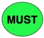
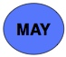

This document presents a set of 54 metadata elements (organized into five categories) to usefully describe Web-based Application Programming Interfaces (APIs). These elements were developed by the Big Data to Knowledge (BD2K) API Interoperability Working Group, which conducted a survey of API metadata used in the real world. This group developed the smartAPI Specification as an extension of existing repositories such as Programmable Web, Biocatalogue, and available standards including Open API, schema.org, etc. The aim of the BD2K API Interoperability Working Group is to develop a strategy for maximizing interoperability and reuse of Web-based APIs. This specification aims to serve as a standard for API development that will facilitate the efficient communication among APIs and reduce development costs. The smartAPI Specification includes 21 metadata elements beyond those included in the Open API Initiative. The metadata elements are grouped into categories related to APIs, service providers, API operations, operation parameters, and operation responses. For each category, the metadata elements that are mandatory, recommended, or optional are described and illustrated by examples. The widespread adoption of the smartAPI Specification by the community promises to improve the efficiency and lower the costs of API development, promoting cross-API compatibility and resolving current challenges in API usage.
You need to have a custom SotD paragraph. Maybe give a succinct description of your spec's status.
The purpose of the smartAPI Specification is to establish a set of standards for the description of metadata elements and values for the description of Application Programming Interfaces (APIs). This document was produced by the Big Data To Knowledge (BD2K) API Interoperability Working Group, one of the NIH Commons Framework Pilot Working Groups. The BD2K API Interoperability Working Group first conducted a survey of API metadata found in existing repositories and guidelines (see Section 2), and subsequently developed the smartAPI Specification as an extension of the Open API Initiative. The Open API Initiative aims to create, develop, and promote an API description format based on the Swagger Specification.
The smartAPI Specification is intended to be a ‘living’ document that will continue to be revised and improved via the input of API development community members.
This standard is the result of a survey by the BD2K API Interoperability Working Group of existing metadata repositories and specifications that describe APIs. The following eight resources were surveyed:
Repositories:The smartAPI Specification includes 21 metadata elements beyond those included in the Open API Initiative. Examples of the 21 elements are the category to which the API belongs; metadata format and access mode at the API metadata level; the parameter type and parameter value type at the operation parameter level; and the conformance to a specified response profile at the operation response level.
We subsequently aggregated all the metadata elements from the eight resources to produce a common list of 54 API metadata elements. We subsequently divided these elements into five categories:
Next, we discussed each of the metadata field amongst the working group members to re-evaluate its applicability and relevance and further classified them into whether it MUST, SHOULD, or MAY be included in the API description. The cardinality and datatype of metadata field were further specified along with a description and example. The results of the survey are available here. The key words "MUST", "SHOULD", and "MAY" in this document are to be interpreted as described in RFC 2119.
The target audience includes software developers, data scientists and informatics researchers, publishers of resource descriptions, and funding agencies.
A human readable label for the API. OpenAPI element: info.title
 The base URI for interacting with the API. OpenAPI element: basePath
A human readable description of the service functionality. OpenAPI element: info.description
A list of media types the APIs can produce. This is global to all APIs but can be overridden on specific API calls. OpenAPI element: produces
Documentation page URL for the API. OpenAPI element: externalDocs
The version of the API. OpenAPI element: info.version
A document that describes the terms of use for the API. OpenAPI element: info.termsOfService
Indication of whether SSL Support is present or absent.
Lists the required security schemes to execute this operation. The object can have multiple security schemes declared in it which are all required. OpenAPI element: securityDefinitions.basicAuth
Primary category that the API belongs to.
 A web page that describes the API. OpenAPI element: host
Publication ID/URL
Indicate whether there are restrictions to using the API
URL of the mirror that the API is available at.
Service specification format.
The protocols used to access the API
Location, city and country of the API.
Language the API was written in.
Maturity of the API.
Name
"name": "MyGene.info API"
Access Point
"access point": "http://mygene.info/"
Description
"description": "Documentation of the MyGene.info Gene Query web services. Learn more about [MyGene.info](http://mygene.info/)"
Response Mime-Type
"produces": "application/json"
Documentation
"documentation": "http://docs.mygene.info/en/v3/"
Version
"version": "2.0.0"
Terms of Service
"terms of service": "http://mygene.info/terms/"
SSL Support*
"ssl support": "yes"
Authentication Mode
"authentication mode": "none"
Category*
"category": "genetics"
Website
"website": "http://mygene.info/"
Publications*
"publications": "Wu C, MacLeod I, Su AI (2013) BioGPS and MyGene.info: organizing online, gene-centric information. Nucl. Acids Res. 41(D1): D561-D565."
API Access Restrictions*
"api access restrictions": "free"
Access Point Mirrors*
"access point mirrors": "http://mygene.info/v3/api/"
API Metadata Format*
"api metadata format": "openAPI"
API Access Mode*
"api access mode": "REST"
API Location*
"api location": "USA"
API Implementation Language*
"api implementation language": "python"
API Maturity*
"api maturity": "stable"
The identifying name of the contact person/organization. OpenAPI element: contact.url
Name of the developer (User ORCID ID/Name)
An e-mail address where the provider of the service may be contacted. MUST be in the format of an email address. OpenAPI element: contact.email
Contributor person or institute
Source of funding.
Forum or Mailing list.
Responsible Organization
"responsible organization": "The Scripps Research Institute"
Responsible Developer
"responsible developer": "http://orcid.org/0000-0002-2629-6124"
Contact Email
"contact email": "cwu@scripps.edu"
Contributor*
"contributor": "Andrew Su"
Funding*
"funding": "NIH"
Developer Forum*
"developer forum": "https://bitbucket.org/sulab/mygene.hub"
Title of the operation. A unique identifier of the operation.
Description of the operation. OpenAPI element: operation.description
A list of MIME types the operation can consume. OpenAPI element: consumes
The base path on which the API is served, which is relative to the host. Or a relative path to an individual endpoint. The field name MUST begin with a slash. The path is appended to the basePath in order to construct the full URL. The object describes the operations available on a single path. The different operations are"get, put, post, delete, options head, patch". OpenAPI element: pathItem
Lists the required security schemes to execute this operation. The object can have multiple security schemes declared in it which are all required. OpenAPI element: securityDefinitions.basicAuth
The transfer protocol of the API. Values MUST be from the list: "http", "https", "ws", "wss". This optional value will override the top-level schemes if present. OpenAPI element: schemes
Keywords describing the operation. OpenAPI element: operation.tags
The path for the operation.
An identifier/URI for the operation. OpenAPI element: operation.operationID
Documentation of the particular operation. OpenAPI element: operation.externalDocs
Access restrictions to invoke the operation.
Names of collections of which the resource is a part e.g. a suite, library etc.
Operation Title*
"operation title": "q"
Operation Description
"description": "Query string. Examples \"CDK2\", \"NM_052827\", \"204639_at\". The detailed query syntax can be found at http://docs.mygene.info/en/latest/doc/query_service.html"
Consumes
"consumes": "application/json"
http Method
"http method": "get"
Authentication Mode
"authentication mode": "none"
Transfer Protocol
"transfer protocol": "http"
Keywords
"keywords": [ "query" ]
Path Template*
"path template": "/query"
Operation ID
"operation ID": "queryGene"
Operation Documentation
"operation documentation": " http://docs.mygene.info"
Access Restrictions*
"access restrictions": "free"
Collection*
"collection": "Gene Annotation"
Name of the operation parameter. OpenAPI element: bodyParameter.patternProperties.name
Description of operation parameter. OpenAPI element: bodyParameter.patternProperties.description
Determines the location of the parameter. OpenAPI element: bodyParameter.patternProperties.in
Type of the parameter in terms of its role in the operation.
Semantic identifiers of particular parameters, retreived from identifiers.org
Minimum occurrence of the parameter. OpenAPI element: minItems
Maximum occurrence of the parameter. OpenAPI element: maxItems
Input/Output data format. OpenAPI element: type
Default value for each input/output. OpenAPI element: default
Example value for each input/output. OpenAPI element: examples
Operation Parameter Name
"operation parameter name": "q"
Operation Parameter Description
"description": "multiple query terms seperated by comma (also support \"+\" or white space), but no wildcard, e.g., \"q=1017,1018\" or \"q=CDK2+BTK\""
Location
"location": "query"
Parameter Type*
"parameterType": "inputParameter"
Parameter Value Type*
"parameter value type": "http://identifiers.org/ensembl"; "http://identifiers.org/ncbigene"
Min
"min": "0"
Max
"max": "1"
Data Format
"format": "string"
Default Value
"default value": "cdk2"
Example Value
"example value": "cdk2"
A list of MIME types the APIs can consume. Here are some examples of MIME types. OpenAPI element: mimeType
An example of the response value. OpenAPI element: response.examples
A list of headers that are sent with the response. OpenAPI element: response.headers.hearders.header
A container for the expected responses of an operation. The container maps a HTTP response code to the expected response.
The list of possible responses as they are returned from executing this operation. OpenAPI element: response.patternProperties
A description of the response. OpenAPI element: responseValue.response.description
Conformance to a specified format.
Semantic annotation of the response using the smartAPI profiler.
Response Format
"response format": "application/json"
Example Response Value
"example response value": "200"
Response Header
"response header": "application/json"
Response Code
"response code": 200
Response Description
"response description": "Successful response"
Response Profile*
"response profile": "http://www.w3.org/ns/anno.jsonld"
Response Data Type*
"response datatype": "'[{"elementPath":"ec","datatype":"http://identifiers.org/ec-code/"},{"elementPath":"ensembl.gene","datatype":"http://identifiers.org/ensembl/"}"
The editors gratefully acknowledge the contributions made to this document by all members of the working group.
Relevant Standards
APIs Represented
Social Media Links*
Links to social media presence such as Twitter URL, facebook, LinkedIn etc.
"social media links": "Twitter: @mygeneinfo"